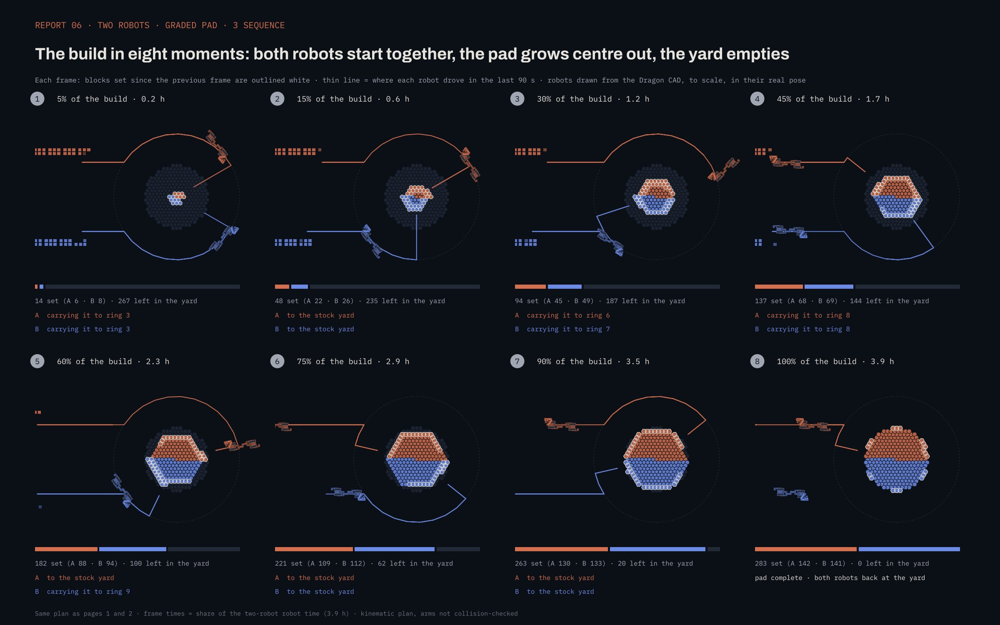
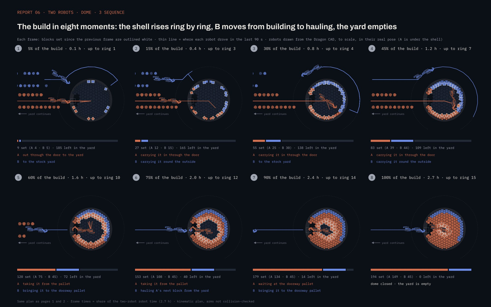
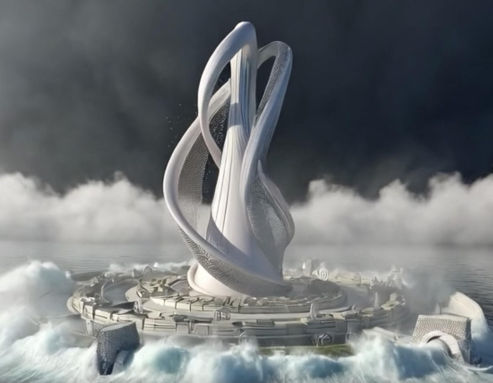
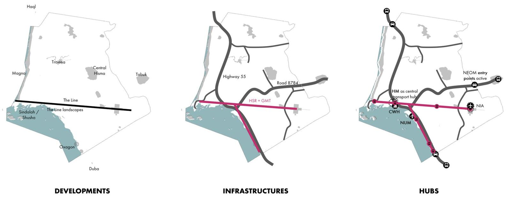
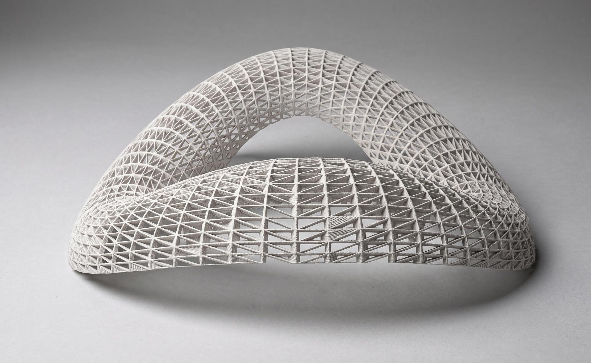
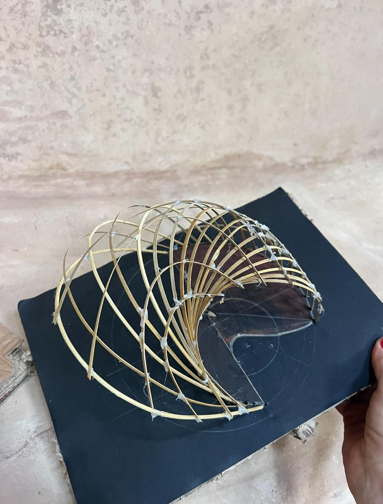
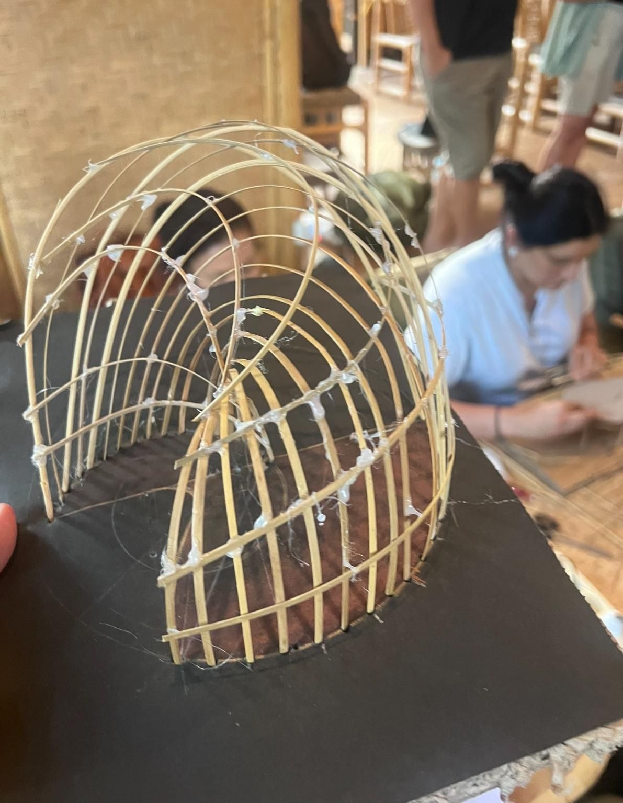

SELECTED WORKS 2016–2026
COMPUTATIONAL DESIGN PORTFOLIO
Contents
02
Contents
- : Curriculum Vitae Experience · Education · Skills p.03
- 01 Moonwalk 2.0: Autonomous Robotic In-Situ Lunar Construction Tohoku University Space Robotics Lab · Topological Interlocking Regolith Structures · 4D BIM & Physics Validation p.04
- 02 UMBRELLA · Real-Time Digital Twin Autonomous Rover–Drone Digital Twin · UE5 / AirSim / SLAM / ROS 2 p.12
- 03 Distributed Exploration of Titan’s Organic Chemistry 9-Agent Autonomous Swarm · UE5 / ROS 2 / Crazyflie Hardware p.15
- 04 Computational Design & Resilience · MANTIS & LogiRhein Earth-Observation Hazard Mapping · Galapagos Optimization (500+ Configs) · X-BIM p.19
- 05 Orbital Gateway Construction Multi-Robot In-Orbit Assembly · Evolutionary Tolerance Optimization p.22
- 06 NEOM Multimodal Mobility Hubs Automated Mobility Infrastructure · Parametric Form-Finding & Fabrication p.25
Nina Velimirovic · Portfolio 2026
p. 02
Curriculum Vitae
03
About Me
Architect, spatial intelligence designer, and systems architect bridging large-scale terrestrial infrastructure, computational design, autonomous construction, and construction robotics. Combining parametric modeling, MBSE, digital twins, and agentic AI workflows validated in Isaac Sim, Unreal Engine 5, and ROS 2.
Research Experience
Visiting Researcher: Space Robotics Laboratory
Tohoku University, Sendai · Prof. Kazuya Yoshida
Sep 2026 – Current
Moonwalk 2.0: digital twin and BIM framework for multi-robot construction of a lunar base.
• Developed parametric definitions in Rhino 8 and Grasshopper for a dry-jointed, topologically interlocking block family enabling self-supporting lunar infrastructure (landing pads, walls, domes, and power columns), tested with 3D-printed scale prototypes.
• Formulated multi-robot planning in Grasshopper and Python exported as 4D IFC; packaged as the Moonwalk Planner plugin running in Isaac Sim and ROS 2 Motion Stack.
• Verified constructibility in Isaac Sim (dome temporary staples, column pins); supervised two students; journal paper in preparation.
• Developed parametric definitions in Rhino 8 and Grasshopper for a dry-jointed, topologically interlocking block family enabling self-supporting lunar infrastructure (landing pads, walls, domes, and power columns), tested with 3D-printed scale prototypes.
• Formulated multi-robot planning in Grasshopper and Python exported as 4D IFC; packaged as the Moonwalk Planner plugin running in Isaac Sim and ROS 2 Motion Stack.
• Verified constructibility in Isaac Sim (dome temporary staples, column pins); supervised two students; journal paper in preparation.
Academic Research Projects
International Space University, Strasbourg
2025 – Current
• UMBRELLA (Systems Lead): Real-time rover–drone digital twin on Mars terrain (UE5, AirSim, SLAM, ROS 2).
• Titan Swarm (Project & Sim Lead): Nine-agent exploration swarm in UE5, ROS 2 and Python on Crazyflie hardware.
• Orbital Gateway (Systems Arch. Lead): Multi-robot in-orbit assembly sequencing with evolutionary tolerance optimisation.
• MANTIS: Earth-observation app mapping hazard impact; Galapagos search tested 500+ building configurations per hazard profile.
• LogiRhein (Founder): Earth-observation platform for identifying logistics disruptors across the Rhine corridor from Sentinel and Copernicus data; pilot with the Port of Strasbourg.
• Titan Swarm (Project & Sim Lead): Nine-agent exploration swarm in UE5, ROS 2 and Python on Crazyflie hardware.
• Orbital Gateway (Systems Arch. Lead): Multi-robot in-orbit assembly sequencing with evolutionary tolerance optimisation.
• MANTIS: Earth-observation app mapping hazard impact; Galapagos search tested 500+ building configurations per hazard profile.
• LogiRhein (Founder): Earth-observation platform for identifying logistics disruptors across the Rhine corridor from Sentinel and Copernicus data; pilot with the Port of Strasbourg.
Professional Practice
Mobility Hubs & Urban Mobility Masterplanning Manager
NEOM · Saudi Arabia
Sep 2022 – Sep 2025
Directed a consortium of four consulting firms developing multimodal mobility requirements across land, water, and air. Led planning and concept design of mobility hubs linking THE LINE, Oxagon, Trojena, and the Gulf of Aqaba, integrating automated transit routing and spatial wayfinding.
Transit Architect, Tel Aviv Red Line
WSP Israel · Tel Aviv
Apr 2016 – Jul 2022
23 km light-rail ($5B, 10 underground civil-defence stations): authored system-wide architectural design requirements, coordinated 5 architecture firms, led development, design, and approvals of the LRT system-wide branding and system equipment, and integrated as-built scan data into BIM/GIS/MMIS at handover.
Architect, Roadway Design & 3D Clash Detection
WSP Middle East · Doha
2015
Expressway Programme P008 ($3B, 26 km): led 4 km Mesaimeer Road upgrade and 3D underground utility coordination in Navisworks and Civil 3D.
Architect / 3D Designer · Bloomberg European HQ
Foster + Partners with MJL · London
2014 – 2015
Developed and maintained the combined-services (MEP) 3D coordination model for the ten-storey headquarters.
Architect · CAD/BIM Specialist
AABCO Doha (2013–2014) · Elektroprivreda Srbije (2008–2012)
Fit-out and shop drawings for Mall of Qatar (387,963 m²) and Workers Hospital; regional power-grid CAD/BIM asset digitalisation.
Education
MSc Space Studies: Master of Space Studies, Space Engineering Track
International Space University, Strasbourg · 2025 – 2026
MScArch: Integrated Master of Architecture & Urban Planning (305 ECTS)
Faculty of Technical Sciences, Univ. of Novi Sad · 2001 – 2010
Executive Education & Courses
The Walkable City · Harvard GSD
2024
Beyond Smart Cities · MIT Media Lab
2023–24
Satellite Communications · Univ. of Oxford
2023
Space Architecture Elective · ISU
2022
System Architecture · MIT
2017
Technical Skills & Languages
Rhino 8 + Grasshopper · Parametric Design
Expert
Revit · Navisworks · AutoCAD / Civil 3D
Expert
4D BIM / IFC · 3ds Max · ArcGIS / EO Data
Advanced
Isaac Sim / OpenUSD · Unreal Engine 5
Advanced
Python
Upper-Int.
ROS 2 · SolidWorks · FreeCAD · TouchDesigner · 3D Print
Intermediate
Serbian (Native) · English (Fluent) · Hebrew (Basic)
Languages
Contact & Portfolio
+381 69 290 4811 · archimatrix@proton.me
linkedin.com/in/archimatrix · github.com/arhimatrix
arhimatrix.github.io/portfolio/Files/portfolio-moonwalk.html
Nina Velimirović · Portfolio 2026
p. 03
Chapter 01 · Autonomous Robotic Assembly & In-Situ Construction Automation
Moonwalk 2.0
Moon Infrastructure Design: Self-Supporting Dry-Interlocking Structures from a 3D-Printed Block Family
Tohoku University Space Robotics Laboratory · Autonomous Multi-Robot Assembly · Topological Interlocking Osteomorphic Blocks · 4D BIM & NVIDIA Isaac Sim Physics Validation
An end-to-end digital twin and BIM framework for lunar south-pole infrastructure: autonomous multi-robot assembly of landing pads, vertical solar towers, and pressurized habitat vaults built from a single self-supporting, dry-interlocking 3D-printed block family without on-site human presence.
An end-to-end digital twin and BIM framework for lunar south-pole infrastructure: autonomous multi-robot assembly of landing pads, vertical solar towers, and pressurized habitat vaults built from a single self-supporting, dry-interlocking 3D-printed block family without on-site human presence.
01
Ch.01 · Moonwalk 2.0 · Tohoku University Space Robotics Lab
p. 04
Ch.01 · Moonwalk 2.0 · Tohoku University Space Robotics Lab
05
Research Overview · Space Robotics Laboratory, Tohoku University · 2026
Moonwalk 2.0 develops a fully autonomous in-situ construction pipeline for permanent lunar infrastructure at the lunar south pole (Connecting Ridge / de Gerlache Rim 2 within ispace Mission 4's ≥87°S landing band). The project spans south-pole terrain analysis, parametric design of a dry-jointed topologically interlocking block family in Rhino 8 and Grasshopper, cooperative multi-robot task scheduling compiled to atomic operation verbs, and closed-loop physics validation in NVIDIA Isaac Sim, tested with 3D-printed scale block prototypes.
- Topological Interlocking Block Family: Formulated parametric osteomorphic and 6-tilt hexagonal block families (Dyskin et al. 2003, 2005; Yong 2011). Alternating non-planar contact faces (0° to 35.3° cube-corner tilt) lock adjacent elements purely in compression without mortar or adhesives, preventing thermal fracture across cryogenic diurnal cycles (ΔT > 250 K).
- Robot-Block Interface Architecture: Engineered three distinct end-effector modules (flush side-handle C-jaw, top twist-lock T-key slot, and top pocket-spreading grip). Top-gripping interfaces leave all side faces unobstructed for zero-clearance placement across pavements, walls, columns, and vaults.
Interlocking Block Family
0° → 35.3° Progression
0.0° Prism
9.0° Step 1
18.0° Step 2
26.0° Step 3
35.3° Cube Corner
200 mm edge · 100 mm thick · Drag to orbit

Rhino 8 / Grasshopper Parametric Definition · Inputs → Hexagon → Alternating Side Tilt (0°–35.3°) → Block Family Generator
Ch.01 · Moonwalk 2.0 · Tohoku University Space Robotics Lab
p. 05
Ch.01 · Moonwalk 2.0 · Tohoku University Space Robotics Lab
06
From One Block Family to Lunar Base Infrastructure
By varying only the side-face tilt angle (0° to 35.3°) while keeping the hexagonal footprint constant, a single parametric block generates distinct structural typologies across the lunar base: flat landing pads, load-bearing retaining walls, open-frame solar power towers, and self-supporting sheltered domes.
01 · Graded Landing Pad (169–283 Blocks)
Laid ring by ring from the centre. The core uses 0° plain hexagons for a flat, gap-free landing plane; side tilt rises step-by-step to 35.3° toward the rim, opening triangular pockets for dust-mitigating electromagnets and locking the perimeter.
02 · Sheltered Horizon Dome (194–211 Blocks)
The same tilted hexagonal block mapped onto a doubly-curved spherical shell (8m span, 2.5m rise). Built ring by ring from the beige rim upward, each block leans on its neighbours in compression, carrying itself without external centering or falsework.
Ch.01 · Moonwalk 2.0 · Tohoku University Space Robotics Lab
p. 06
Ch.01 · Moonwalk 2.0 · Architectural Visualisations · Exterior Shells
07
Lunar Base Infrastructure: Habitats, Greenhouses, Labs & Assembly Chambers
Scaling the dry-interlocking regolith shell system from single domes into a complete lunar settlement: radiation-shielded regolith vaults enclose pressurized inflatable liners housing bio-regenerative hydroponic greenhouses, crew quarters, research laboratories, and communal amphitheaters.
Ch.01 · Moonwalk 2.0 · Tohoku University Space Robotics Lab
p. 07
Ch.01 · Moonwalk 2.0 · Architectural Visualisations · Habitat Interiors
08
Ch.01 · Moonwalk 2.0 · Tohoku University Space Robotics Lab
p. 08
Ch.01 · Moonwalk 2.0 · On-Site Physics Simulation (NVIDIA Isaac Sim)
09
On-Site Lunar Physics Simulation · NVIDIA Isaac Sim (PhysX 6.1)
Before hardware deployment, every assembly plan exports as a USD scene and executes dynamically in NVIDIA Isaac Sim on NASA LOLA lunar south-pole terrain under 1.62 m/s² gravity, dry contact friction (μ = 0.7), and 1,900 kg/m³ regolith density. Each block follows its planned robotic path and releases into gravity to verify structural equilibrium during and after assembly.
Simulated Constructability Results
• Graded Pad (283 Blocks): Intrinsically stable dry-stacked; cumulative drift settled under 0.5 mm.
• Sheltered Dome (194 Blocks): Simulation isolated inward unseating at the airlock doorway when temporary staples were removed (73 fell); adding an arch frame and permanent pins stabilized 194 of 194 blocks within 5 mm.
• Power Column (450 Elements, 2.2 m): Simulated with permanent connector pins: 450 of 450 elements held within 5 mm (0 fell); physical execution on MoonBot Dragon hardware is the next planned validation step.
01 · Graded Pad · Two Dragons Centre-Out Tandem Paving
02 · Sheltered Dome · Two-Dragon Coordinated Assembly
03 · Sheltered Dome · Dragon Hauler + Interior Tricycle Hand-Over
04 · 2.2m Lattice Power Column · Dragon + Tall-Stance Tricycle (450 Elements)
Ch.01 · Moonwalk 2.0 · Tohoku University Space Robotics Lab
p. 09
Ch.01 · Moonwalk 2.0 · Cooperative Multi-Robot Planner & Operators
10
Cooperative Multi-Robot Planner & Atomic Operators
Rather than brittle pre-computed trajectories, the planner compiles 4D IFC geometry into eight atomic operation verbs (
DRIVE, TURN, ARM_JOINTS, ARM_LINE, GRIP, HOLD, WAIT, SIGNAL). Autonomous MoonBot Dragon rovers coordinate via event signals (such as block 37 set) without a shared global clock, preventing path deadlocks during simultaneous hauling and placement.
Simulated Multi-Robot Build Sequences
•Pad (283 Pavers, Simulated): Centre-out tandem paving (2 Dragons), 3.89h robot time across 10,942 operations with 0 clashes.
•Dome (194 Blocks, Simulated): Inside-out assembly through the 0.95m doorway via exterior Dragon hauler and interior Tricycle placer, 1.58h robot time.

01 · Landing Pad Planning · 283 Pavers · Centre-Out Tandem Paving (3.89 h)

02 · Sheltered Dome Planning · 194 Blocks · Exterior Dragon + Interior Tricycle Hand-Over (1.58 h)
Ch.01 · Moonwalk 2.0 · Tohoku University Space Robotics Lab
p. 10
Ch.01 · Moonwalk 2.0 · Tohoku University Space Robotics Lab
11
The Moonwalk Planner Tool · Rhino 8 / Grasshopper
The Moonwalk Planner plugin packages the entire construction workflow into a unified Rhino 8 / Grasshopper tool. Users define site constraints (
MW Site), interlocking block geometry (MW Blocks), and structural assemblies (MW Dome, MW Column), run background multi-robot scheduling (MW Plan Job), inspect assembly states on a time slider (MW Plan Preview), export USD scenes (MW Isaac Export), and read displacement telemetry back onto the CAD canvas (MW Physics).
Decoupled Plan File & Closed-Loop Validation
By isolating planning behind a single intermediate Plan File, the identical instruction set executes both in NVIDIA Isaac Sim physics validation and on physical MoonBot hardware via the lab's ROS 2 Motion Stack. Closed-loop displacement read-back automatically colour-codes unstable blocks directly in Grasshopper, driving iterative structural revisions before fabrication.
Plugin Architecture
Five layers, one plan file in the middle
Grasshopper plans → Motion Stack moves → Isaac Sim validates → results come back
L1
Canvas
Grasshopper components the architect works with (
MW Site, MW Dome, MW Column)L2
Core library
Parametric design, multi-robot kinematics (Dragon, Tricycle) & scheduling
L3
Compiler
Turns architectural geometry into atomic robotic operations
WAIST
Plan file
8 operation verbs (
DRIVE, TURN, ARM_JOINTS, GRIP, SIGNAL), robots synced by signalsL4
Executors
Isaac Sim validates physics · ROS 2 Motion Stack moves real hardware
L5
Read-back
Displacement results colour the design directly in Grasshopper
Moonwalk Rhino 8 / Grasshopper Canvas · MW Load Plan · MW Plan Preview · MW Isaac Export · MW Physics · MW Plan Job
Ch.01 · Moonwalk 2.0 · Tohoku University Space Robotics Lab
p. 11
02
Chapter 02 · Supervisory Digital Twin & Autonomous Field Robotics
UMBRELLA · Real-Time
Digital Twin
Digital Twin
Supervisory Control Architecture · UE5/AirSim Digital Twin
Real-time digital twin framework for autonomous multi-robot field coordination, supervisory monitoring architecture, and closed-loop sensor feedback validated on Mars-analogue terrain simulation.
Ch.02 · UMBRELLA · Real-Time Digital Twin
p. 12
Ch.02 · UMBRELLA · Real-Time Digital Twin
13
System Architecture · Multi-Robot Autonomous Field Mapping
Autonomous multi-robot mapping on Mars-analogue terrain introduces a core distributed coordination problem: a six-wheeled rover and an autonomous aerial drone must coordinate semi-autonomously across complex terrain while an Earth-based operator maintains situational awareness of both systems under communication lag. The operator must track robot position, coordination state, and sensor health · and retain the ability to issue override commands at any point in the mission.
The UMBRELLA system architecture addresses this challenge through two formally defined subsystems. The Mobility Subsystem governs localisation, path planning, and actuator control · providing the real-time telemetry stream the supervisory interface uses to display robot state. The Communications System manages inter-vehicle data-link, science data relay, and ground-segment uplink · ensuring the operator retains command authority and can monitor link health at all times. Both subsystems were formally defined in the MBSE framework so they could be validated in digital twin simulation before deployment.
The UMBRELLA system architecture addresses this challenge through two formally defined subsystems. The Mobility Subsystem governs localisation, path planning, and actuator control · providing the real-time telemetry stream the supervisory interface uses to display robot state. The Communications System manages inter-vehicle data-link, science data relay, and ground-segment uplink · ensuring the operator retains command authority and can monitor link health at all times. Both subsystems were formally defined in the MBSE framework so they could be validated in digital twin simulation before deployment.

UMBRELLA Mobility Subsystem Architecture · Localisation, Navigation & Locomotion Control
UMBRELLA Comms System Architecture · Rover, Drone, Deep Space Link & Air Interface
Ch.02 · UMBRELLA · Real-Time Digital Twin
p. 13
Ch.02 · UMBRELLA · Real-Time Digital Twin
14
Project Overview · Systems Lead · Strasbourg 2025–2026
Validated the UMBRELLA system architecture by simulating both Mobility and Communications subsystems in Mars-terrain conditions using a digital twin built from NASA MOLA heightmap data and AirSim physics · calibrating Martian gravity, surface friction, atmospheric density, and full sensor suites (RGB-D, IMU, LiDAR).
Designed the supervisory interface to display system architecture state in real-time, enabling operators to visualise robot task sequences, sensor degradation events, SLAM map state, and communication link health · and intervene via override commands through a closed-loop ROS 2 bridge.
Designed the supervisory interface to display system architecture state in real-time, enabling operators to visualise robot task sequences, sensor degradation events, SLAM map state, and communication link health · and intervene via override commands through a closed-loop ROS 2 bridge.
- · Validated both subsystems using NASA MOLA terrain and AirSim physics · calibrating gravity, friction, atmosphere, and sensor suites under Mars conditions.
- · Designed the supervisory interface to translate architecture state into operator-readable displays: real-time telemetry at 50 Hz, degradation alerts, SLAM map updates, and link status across rover and drone.
- · Implemented closed-loop feedback: override commands propagate via AirSim-to-ROS 2 bridge, update the digital twin state, and return updated telemetry in real time.
- · Designed Blackboard data-sharing for leader-follower coordination, enabling rover and drone to share SLAM state while the operator monitors and intervenes in visual degradation scenarios.
UE5 Martian Terrain Calibration · NASA MOLA DEM · SkyAtmosphere & AirSim Physics Setup
NASA MOLA
Heightmap DEM
16-bit terrain data
UE5 / AIRSIM
Physics Sim
RGB-D · IMU · LiDAR
ROS 2 BRIDGE
SLAM / Control
Path planning nodes
SUPERVISOR HMI
Override Interface
Supervisory Override
Key Metrics
50Hz
Real-time telemetry loop
9×
Simultaneous agents
3D
Sensor suites calibrated
Ch.02 · UMBRELLA · Real-Time Digital Twin
p. 14

Chapter 03 · Planetary Robotics & Autonomous Systems & Autonomous Systems
Distributed Exploration of Titan's
Organic Chemistry
Organic Chemistry
A Cooperative Hybrid-Agent Swarm Mission
Multi-agent coordination, adaptive task planning, decentralized consensus protocols, and high-fidelity swarm simulation for Titan’s prebiotic terrain mapping.
03
Ch.03 · Distributed Exploration of Titan's Organic Chemistry
p. 15
Ch.03 · Distributed Exploration of Titan's Organic Chemistry
16
Project Overview · Project Lead & Simulation Lead
A cooperative swarm of nine autonomous hybrid agents addresses a core distributed-autonomy coordination problem: how does a multi-robot system maintain coherent task execution when communication is delayed or disrupted, agent behaviors are partially decoupled, and swarm state is distributed across nine independent platforms? Designed for Titan’s’s prebiotic terrain mapping, the project spanned the full development arc: (1) CAD design of a novel dual-mode robotic agent capable of both wheeled surface traversal and aerial flight, (2) systems architecture for decentralized multi-agent coordination using MBSE, ROS 2, and consensus algorithms with supervisory override capability, and (3) high-fidelity swarm simulation in Unreal Engine 5, with coordination logic validated on physical CrazyFlie hardware.
- Designed the dual-mode hybrid agent in CAD: a single platform combining wheeled locomotion for surface science with rotor-based flight for terrain crossing and repositioning: resolving the mass, power, and mechanism trade-offs between the two mobility modes (see orthographic and exploded assemblies, FIG.04.C–D).
- Built the full-swarm simulation in Unreal Engine 5: nine agents operating over Titan-analog terrain, testing mode-switching behavior, terrain-adaptive task allocation, and swarm coordination under simulated communication delay and disruption.
- Programmed adaptive task-planning and leader-election algorithms with human-interrupt capability: supervisory operators can inject override commands mid-consensus, with the delay-tolerant mesh ensuring command propagation even under disruption: validated on physical CrazyFlie hardware under real communication constraints.
- Applied MBSE to trace 35 system requirements through FMECA, mass/power/data link budgets, and agent behaviour models: ensuring coordination logic and override failure modes were explicitly designed and validated.


Ch.03 · Distributed Exploration of Titan's Organic Chemistry
p. 16
Ch.03 · Distributed Exploration of Titan's Organic Chemistry
17

Orthographic CAD Profiles (Front, Side, Back)

Exploded CAD Assembly & Component Specs
Ch.03 · Distributed Exploration of Titan's Organic Chemistry
p. 17
Ch.03 · Distributed Exploration of Titan's Organic Chemistry
18

Parametric Agent Configuration

UE5 Exploration Simulation · Titan Prebiotic Terrain Mapping
Ch.03 · Distributed Exploration of Titan's Organic Chemistry
p. 18

04
Chapter 04 · Computational Design & Resilience
Computational Design
& Resilience
& Resilience
MANTIS & LogiRhein · Earth-Observation Optimization & X-BIM
Spatial simulation and monitoring dashboards to evaluate building performance under extreme environmental stress. Custom Python/Streamlit plugins combining BIM structural data with real-time sensor streams.
Ch.04 · Computational Design & Resilience
p. 19
Ch.04 · Computational Design & Resilience
20
MANTIS & LogiRhein · Algorithmic Optimization & Earth-Observation Diagnostics
Extending construction automation to environmental and logistical resilience, MANTIS and LogiRhein integrate Earth-observation telemetry with parametric optimization and BIM diagnostics. MANTIS maps site-specific hazard exposure from geospatial inputs and runs evolutionary searches across 500+ building configurations per hazard profile, while LogiRhein forecasts Rhine-corridor freight disruption from Sentinel and Copernicus data (piloted with the Port of Strasbourg).
Buildings face compounding climate risks · wildfire, flood, hurricane, seismic loading, extreme heat · that traditional design methods cannot address simultaneously. Computational design explores hundreds of configurations simultaneously, identifying unintuitive resilient forms that human intuition alone would not reach.
Buildings face compounding climate risks · wildfire, flood, hurricane, seismic loading, extreme heat · that traditional design methods cannot address simultaneously. Computational design explores hundreds of configurations simultaneously, identifying unintuitive resilient forms that human intuition alone would not reach.
- · Developed Mantis to resolve the multi-hazard optimisation problem: integrating real-time geospatial risk feeds for any latitude/longitude input, computing a localized vulnerability index · replacing assumption-based design with evidence-based hazard profiling.
- · Implemented parametric optimization testing 500+ building configurations per hazard profile, generating hazard-specific modules.
- · Maintained designer-in-the-loop control: Mantis surfaces optimal configurations for architect review · computation identifies candidates, the architect contextualises and approves.
- · Integrated X-BIM real-time sensor dashboard to close the validation loop: structural health and resilience margin monitored live against design predictions, feeding field data back into Mantis.

Ch.04 · Computational Design & Resilience
p. 20
Ch.04 · Computational Design & Resilience
21
Parametric Form Optimisation & Physics Simulation Integration
Mantis pairs Earth-observation hazard profiling with Galapagos evolutionary form-finding across 500+ building configurations per hazard profile. Generated structural geometries export directly to a physics simulation platform to test construction stability, assembly sequence behavior, and physical feasibility under site-specific environmental loads.

Ch.04 · Computational Design & Resilience
p. 21
05

Chapter 05 · In-Orbit Construction & Autonomous Assembly
Orbital Gateway
Construction
Construction
Consensus Coordination · In-Orbit Assembly · Digital Twin
Computational coordination logic for robotic in-orbit assembly sequences at the Lunar Gateway. Multi-robot consensus algorithms, structural tolerancing, and digital twin dashboards.
Ch.05 · Orbital Gateway Construction
p. 22
Ch.05 · Orbital Gateway Construction
23
Project Overview · Systems Architecture Lead
Robotic in-orbit assembly of complex spacecraft at the Lunar Gateway presents a fundamental autonomous coordination challenge: modules manufactured by distributed contractors must be assembled by coordinated robot teams under supervisory oversight: with no margin for error in microgravity.
The design strategy centred on standardized modular interfaces: defining exact mechanical, electrical, and informational specifications enabling distributed fabrication with standardized specifications across independent manufacturing chains. The work integrated interface design (docking geometry, electrical handshakes, capture mechanisms), computational algorithms for robotic assembly coordination (sequencing, tolerance budgeting, multi-robot consensus), and supervisory protocols enabling operators to monitor progress, recognise deviations, and intervene at contingency points.
The design strategy centred on standardized modular interfaces: defining exact mechanical, electrical, and informational specifications enabling distributed fabrication with standardized specifications across independent manufacturing chains. The work integrated interface design (docking geometry, electrical handshakes, capture mechanisms), computational algorithms for robotic assembly coordination (sequencing, tolerance budgeting, multi-robot consensus), and supervisory protocols enabling operators to monitor progress, recognise deviations, and intervene at contingency points.
- Designed standardized modular interfaces specifying docking geometry, electrical connections, and informational handshakes: enabling distributed fabrication across independent contractors without custom fit-up, and making assembly state legible to supervisory operators.
- Applied evolutionary solvers optimising interface tolerances across distributed manufacturing, simulating worst-case cumulative stack-up to ensure capture mechanisms succeed and structural margins are preserved under all tolerance scenarios.
- Programmed consensus-coordination algorithms for multi-robot assembly sequencing: leader election, supervisory override protocols, anomaly recovery: validated through digital twin simulation of microgravity dynamics and docking loads.
- Built real-time data pipelines exporting live fabrication tolerances and assembly states to digital twin dashboards, supporting user evaluation of supervisory interface legibility and contingency decision timelines.
ASSEMBLY / ORBITAL_SEQ.PY
Python 3.11
def orbital_assembly(modules, fleet):
sequence = plan_assembly_order(modules)
for module in sequence:
robot = assign_robot(fleet, module)
robot.dock(module, tolerance=0.002)
verify_structural_lock(module)
update_digital_twin(module.state)

Ch.05 · Orbital Gateway Construction
p. 23

06
Chapter 06 · Mobility & Infrastructure Intelligence
NEOM Multimodal
Mobility Hubs
Mobility Hubs
Automated Mobility Infrastructure · Parametric Form-Finding & Fabrication
Multimodal mobility masterplanning and parametric structural canopies for automated transit interchange hubs linking THE LINE, Oxagon, Trojena, and the Gulf of Aqaba: with Grasshopper form-finding exported for CNC and additive manufacturing.
Ch.06 · NEOM Multimodal Mobility Hubs
p. 25
Ch.06 · NEOM Multimodal Mobility Hubs
26
Project Overview · NEOM · Saudi Arabia · 2022–2025
NEOM’s 170km mobility corridor required integrating employer requirements across land, water, and air transit into buildable, automated interchange hubs. Directing a consortium of four consulting firms, the work combined (1) multimodal hub spatial planning and automated vehicle routing logic, (2) sensor-embedded infrastructure for dynamic transit scheduling, and (3) parametric canopy form-finding in Rhino/Grasshopper exported directly for CNC and additive fabrication (validated via physical timber-rib and 3D-printed scale models).
- Authored multimodal spatial requirements and automated vehicle docking clearances across land, water, and air interchange typologies.
- Engineered sensor-integrated circulation networks coordinating autonomous transit routing, platform barrier states, and dynamic spatial wayfinding.
- Developed parametric Grasshopper canopy definitions exported to CNC and additive manufacturing pipelines, verified through physical timber-rib wireframe models.
- Transitioned from system-level masterplanning to parametric exploration: using spatial routing feedback to drive computational form-finding for adaptive canopy structures and dynamic wayfinding elements.
Integrated Multimodal Mobility Simulation
Transit Interchange Simulation
Neom Integrated Multimodal Mobility System

NEOM Integrated Multimodal Mobility System · Developments, Infrastructure & Hubs
Ch.06 · NEOM Multimodal Mobility Hubs
p. 26
Ch.06 · NEOM Multimodal Mobility Hubs
27
Multimodal System Integration: Physical Fabrication & Automated Transit
Automated transit interchanges synchronize high-throughput autonomous vehicle operations with modular, digitally fabricated architectural shells. The spatial architecture coordinates three coupled infrastructure layers:
Integration of Digital Operations with Physical Space
- Dynamic Flow & Routing Telemetry: Embedded sensor networks track platform load and transit density, feeding predictive routing models for automated pod scheduling.
- Synchronized Platform Operations: Automated platform screen doors, docking clearances, and dynamic directional indicators update in real time with vehicle arrival sequences.
- Synchronized Safety Zones: Vehicle approach states and docking sequences communicated through coordinated spatial, acoustic, and visual signals.
From Strategy to Computational Form: Scaling Legible Interfaces
- Occupancy-Responsive Geometry: Structural ribs and clearance profiles parametrically linked to pedestrian density: high-traffic zones received extended canopy coverage and enhanced visual contrast.
- Manufacturing Scalability: Parametric definitions generated site-specific configurations maintaining a consistent structural typology, exporting fabrication-ready geometry for additive manufacturing and CNC.
- Interface Coherence: Color gradients, rib spacing, and material transitions synchronized across all hub sites, creating a unified experiential language adapting to local site constraints.

Systems Integration: Cognitive BOH Layer & Concourse FOH Interfaces
Pedestrian Flow Simulation: Real-Time Dynamic Routing Indicator


Morphological Prototypes: Multi-Scale Station Shells & Structural Canopy Forms
Ch.06 · NEOM Multimodal Mobility Hubs
p. 27
Ch.06 · NEOM Multimodal Mobility Hubs
28


Front Elevation: Undulating Torus Canopy
Perspective View: 3D-Printed Structural Shell
Grasshopper Parametric Definition: Sub-D Grid & Structural Relaxation
Crescent Form Generation & Geometric Evolution Steps
Ch.06 · NEOM Multimodal Mobility Hubs
p. 28
Ch.06 · NEOM Multimodal Mobility Hubs
29


Isometric View: Rotated Structural Shell
Perspective View: Segmented Façade Prototype
Grasshopper Parametric Definition: Segmented Façade Pattern Generation
Architectural Visualization: Rotated Shell Canopy & Driverless Hub




Physical Model: Timber Rib Wireframe & Assembly
Ch.06 · NEOM Multimodal Mobility Hubs
p. 29